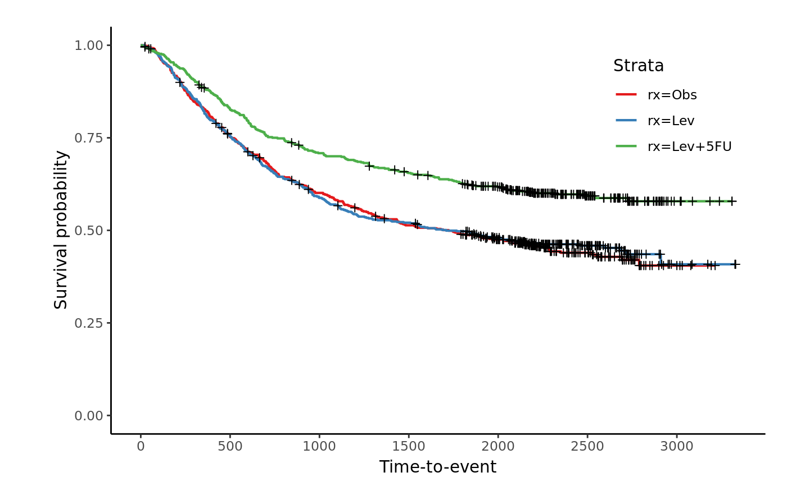

Creates a Kaplan-Meier plot with at risk tables below
jskm(sfit, table = FALSE, xlabs = "Time-to-event", ylabs = "Survival (%)", xlims = c(0, max(sfit$time)), ylims = c(0, 1), ystratalabs = names(sfit$strata), ystrataname = "Strata", timeby = signif(max(sfit$time)/7, 1), main = "", pval = FALSE, marks = TRUE, shape = 3, legend = TRUE, legendposition = c(0.85, 0.8), ci = FALSE, subs = NULL, linecols = "Set1", dashed = FALSE, cumhaz = F, cluster.option = c("None", "cluster", "frailty"), cluster.var = NULL, ...)
| sfit | a survfit object |
|---|---|
| table | logical: Create a table graphic below the K-M plot, indicating at-risk numbers? |
| xlabs | x-axis label |
| ylabs | y-axis label |
| xlims | numeric: list of min and max for x-axis. Default = c(0,max(sfit$time)) |
| ylims | numeric: list of min and max for y-axis. Default = c(0,1) |
| ystratalabs | character list. A list of names for each strata. Default = names(sfit$strata) |
| ystrataname | The legend name. Default = "Strata" |
| timeby | numeric: control the granularity along the time-axis; defaults to 7 time-points. Default = signif(max(sfit$time)/7, 1) |
| main | plot title |
| pval | logical: add the pvalue to the plot? |
| marks | logical: should censoring marks be added? |
| shape | what shape should the censoring marks be, default is a vertical line |
| legend | logical. should a legend be added to the plot? |
| legendposition | numeric. x, y position of the legend if plotted. Default=c(0.85,0.8) |
| ci | logical. Should confidence intervals be plotted. Default = FALSE |
| subs | = NULL, |
| linecols | Character. Colour brewer pallettes too colour lines. Default ="Set1", |
| dashed | logical. Should a variety of linetypes be used to identify lines. Default = FALSE |
| cumhaz | Show cumulaive hazard function, Default: F |
| cluster.option | Cluster option for p value, Default: c("None", "cluster", "frailty") |
| cluster.var | Cluster variable |
| ... | PARAM_DESCRIPTION |
Plot
DETAILS
library(survival) data(colon) fit <- survfit(Surv(time,status)~rx, data=colon) jskm(fit, timeby=500)